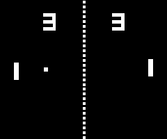

Računalne igrice su dio naše svakodnevice, jednima služe za ubijanje dosadnog vremena, drugi tako troše svoje slobodno vrijeme, a treći na njima zarađuju. Popularnost igrica potvrđuju i brojke, 2020. godine prihodi industrije video igrica iznosili su 180 milijardi dolara. To tu industriju stavlja ispred filmske i glazbene industrije zajedno. Popularnost nam govori da je dosta ljudi uzelo igrice u svoje živote, no postavlja se pitanje je li to korisno za nas, za društvo, kakve donosi koristi, a kakve nedostatke i kako igrice mijenjaju naše živote. U ovom radu ću vam pokušati odgovoriti na ta pitanja i predstaviti računalne igrice od njihovog početka pa do danas.
Kad većina ljudi pomisli na početak računalnih igrica prvo što im padne na pamet je igrica Pong, jednostavna igra nalik na tenis. Pong, napravljen 1972., je jedna od prvih igrica, ali nije prva. Da bismo našli prvu računalnu igricu potrebno je vratiti se u godinu 1950. kada su računala bila vrlo skupa, ogromna i nedostupna za osobnu uporabu. Na jednom takvom je kanadski inženjer Josef Kates povodom Nacionalne kanadske izložbe napravio demonstrativnu igru nazvanu Bertie the Brain. To je bila već od prije poznata igra Križić-kružić samo umjesto na papiru, u elektroničkom obliku. Računalo bi umjesto ekrana koristilo obične žarulje. Dvije godine poslije, Alexander Douglas je otišao korak dalje i napravio sličnu igru OXO. To je bila također igra Križić-kružić, ali žarulje je zamijenila katodna cijev.
Druga zanimljiva igra nam dolazi 1958. godine, Tennis for two. Napravio ju je fizičar William Higinbotham također za demonstrativne potrebe u laboratoriju na računalu namijenjenom za računanje putanje projektila. To je bila brzopotezna igra za dva igrača gdje ste mogli testirati vlastite reflekse. Par godina kasnije, 1962. pojavljuje se prva igrica čiji je kod mogao biti kopiran na drugo računalo. Radi se o računalnoj igrici Spacewar koju su napravila trojica studenata MIT-a na sveučilišnom računalu PDP-1 (Programmed data processor-1). Igra se sastojala od dva svemirska broda koji su se međusobno borili izravnom borbom. Zanimljivost je da je igrica bila dizajnirana tako da iskoristi sve raspoložive resurse i svu snagu računala PDP-1. Igra se igrala na sveučilištima, ali nije postala javno dostupna jer je pogodno računalo koštalo 120 tisuća dolara. Po uzoru na Spacewar su nastale nove igre i na drugim sveučilištima. Igre još nisu bile komercijalni proizvod do 1971. kad su dva inženjera, Nolan Bushnell i Ted Dabney, odlučili napraviti verziju igre Spacewar za automate. Igra se zvala Computer space i bila je prva komercijalna igrica. Zbog uspješnosti igre osnivaju tvrtku Atari incorporated i zapošljavaju Allana Alcorna. Allan dobija zadatak da napravi jednostavnu ping pong igru. Kad je Bushenell vidio napredak odlučio je izbaciti Pong na tržište 1972. To je bio puni pogodak koji je zapisani u povijesti. Prodali su preko osam tisuća automata za Pong. Obzirom da je to bila igra za dvoje koja se igrala na javnim mjestima, imala je dobar socijalni utjecaj. Ljudi su se upoznavali i družili igrajući Pong.
Iste godine izlazi prva igraća konzola, Magnavox Odyssey. Konzola se spajala na televizor i sadržala je igre za dvoje, koje su bile više nalik na društvene igre nego na računalnu igricu. Nakon "Ponga" došlo je još par igrica za automate. Neke od njih su Space invaders i popularni Pac-man.


U 80-ima dolazi razvoj računala i pojavljuju se prva računala za osobno korištenje, a time i raste interes za programiranjem. Nastaje puno novih igrica, većinom su to bile igrice na bazi već postojećih, i igranje igrica postaje sve dostupnije i nalik današnjem. Revolucionarna igrica koja je došla 1984. zvala se Elite. Napravili su je dva studenta, David Braben i Ian Bell. Ta igrica je bila posebna jer je bila prva "open world" s 3D grafikom. U igrici kontrolirate svemirski brod i cilj vam je podići svoj status. To možete postići na razne načine, neki bi u stvarnom svijetu bili moralno neprihvatljivi i time vas igrica po prvi put stavlja u moralnu dilemu. Možemo reći da se iz ovog žanra razvio GTA (Grand Theft Auto) serijal. Danas je GTA 5 jedna od najpopularnijih i najuspješnijih video igrica. Za neke je GTA najbolja igrica koja je napravljena u kojoj mogu najbolje izraziti svoju virtualnu slobodu na njima željeni način, a za druge je najveći krivac za nasilje među današnjom mladeži. Više pročitajte na linku (nasilje u video igricama).
Još jedna igrica koja će biti zapamćena u povijesti je Doom iz 1993. To je bila prva popularna igrica iz prvog lica (FPS) koja je imala 3D grafiku i multiplayer mod. Od tada se mogla skupina prijatelja umrežiti i zajedno se pucati. Prvotni razlog zašto su napravili igricu iz prvog lica je jer tako računalo nije trebalo procesirati lika pa je igrica mogla brže raditi. Doom je također bila dosta nasilna video igrica. (link) Par godina poslije, 1998., dolazi StarCraft, kompetitivna, strateška multiplayer igrica. Multiplayer postaje sve popularniji i organiziraju se natjecanja. Natjecanja su se organizirala čak i na globalnoj skali i bila su prenošena na televiziji. Tako se dolazimo do pojma elektronički sportovi (eSports) i profesionalnih gamera. Kasnije se razvija internetska stranica za igrice, Twitch.tv, koja uz igrice "Dota", "Counter Strike", "League of Legends" i "Call of Duty" postaje najposjećenija stranica za video stream.
Dolaskom novih tehnologija i razvojem grafike izlaze igrice poput Doom, Mortal Combat, Night trap i igrice općenito postaju sve nasilnije i ne primjerenije za sve dobne uzraste. Nastaje debata što je previše, treba li djeci dati da igraju bilo što i je li nasilje povezano s nasilnim igricama. Jedan incident se dogodio u travnju 1999. godine, kada su dva učenika srednje škole u Columbineu izvršili napad na školu i pritom ubili 12 učenika i nastavnika, a ozlijedili 21 učenika. Napadači su nakon toga počinili samoubojstvo. Tragediju se povezuje s igricama jer su napadači u slobodno vrijeme igrali GTA. Mišljenja su podijeljena i postoje razna istraživanja za i protiv obje strane.
Bez obzira postoji li ili ne korelacija između nasilja i igrica, roditelj svakako treba paziti što dijete unosi u svoj mozak. Kao što nisu svi filmovi primjereni za djecu, i igrice nakon skandala oko igrica Doom i Mortal Combat su dobile rejting. Nitko ne želi dati djetetu nešto što ne može podnijeti, bez obzira hoće li od toga postati nasilno ili ne. Dječji mozak je u razvoju i zato je ranjiv, a na roditeljima je da ga zaštite od svake moguće opasnosti. Kao što niti jedan roditelj neće djetetu dati da gleda pornografiju ili horor film, nebi trebao niti dati da igra igricu gdje nakon što porazi protivnika bira hoće li mu iščupati srce ili glavu ili će ga prepiliti na pola uz grafiku koja to vjerno može dočarati.
"Moramo zaustaviti veličanje nasilja u našem društvu. To uključuje jezive i grozne video igre koje su danas uobičajene. Danas je prelako za mlade da se okruže kulturom koja slavi nasilje. Moramo to zaustaviti ili bitno smanjiti i to mora početi odmah." - Trump
U devedesetima dolazi još jedna karakteristična igrica, "PaRappa the Rapper". Ta igrica se igrala u ritmu. Trebali ste stiskati tipke u ritmu kako je vaš karakter repao. Možemo reći da je to bila prva preteča simulacijama sviranja koje se danas koriste za poduku. Jedna takva igrica uz pomoć koje možete naučiti svirati je "Rocksmith". Spojite električnu gitaru s igračom konzolom i učite svirati na zabavan način. Kad igrice izbacimo iz ekrana i ubacimo u stvarnost iz njih učimo. Godine 2006. dolazi konzola koja vas je potaknula čak i na fizičku aktivnost, to je bila Nintendo Wii konzola. Mogli ste igrati tenis sa svojim ukućanima i to u kući ili ste mogli sobu pretvoriti u kuglanu. Odemo li desetak godina u budućnost naići ćemo na nešto još naprednije, gdje možete doslovno ući u igricu i oko vas lete neprijatelji koje pucate. Riječ je o uređajima za virtualnu stvarnost (VR headsets). Osim za igrice VR vam može poslužiti da odete u virtualnu šetnju i tako doživite umjetnost, posebno u današnje vrijeme kad je sve zatvoreno. VR ima jako korisnu primjenu u 3D modeliranju, također se može koristiti za učenje. Uz pomoć VR-a studenti medicine mogu biti prisutni na operaciji i sudjelovati u njoj, učenici fizike mogu se premjestiti s papira na nešto što je lakše za predočiti. Primjena postoji i za učenje geografije, astronomije i matematike.
Kad smo kod učenja, jedna igrica može biti vrlo praktična i kreativna, a koristi se u školama pa čak i za pomoć djeci s autizmom. To je "Minecraft", kockasti svijet u kojem možete izraditi što vam padne na pamet. Djeca se znaju okupiti i zajedno napraviti ogromne građevine.
Da bi nešto proglasili računalnom igricom smatramo da nas mora natjerati da odvojimo vrijeme, sjednemo za računalo i uključimo se. No zapravo i društvene mreže su na neki način računalne igrice, barem tako djeluju. Sustav nagrađivanja kao kad skupimo novčić je prisutan, imamo interakciju i dosta virtualnih elemenata. To je igrica u koju smo skoro stalno uključeni, dosadno vrijeme ubijamo zabavljajući se gledanjem tuđih objava i slika, povezani smo u masivnom multiplayeru s drugim ljudima iz cijelog svijeta, razmišljamo što objaviti da skupimo što više likeova što nam je i glavni zgoditak u igri.
Stoga ne možemo reći da su igrice i društvene mreže u potpunosti loše ili u potpunosti dobre. Kao i u svemu drugome i u njima možemo naći loše strane, ali dobrih strana također ima i one mogu biti vrlo vrijedne za sve nas. Društvene mreže nam pomažu da lakše ostanemo u kontaktu s prijateljima i obitelji, da lakše steknemo nova poznanstva pa čak i da preko njih nekome pomognemo. Ako se doktori usavršavaju pomoću VR-a, ti doktori će jednoga dana spašavati živote. Ono što mi svi možemo napraviti je usredotočiti se na korištenje računalnih igrica i društvenih mreža u pozitivne svrhe. To možemo učiniti tako da na primjer ako nekome želimo kupiti računalnu igricu možemo se odlučiti za neku kao Nintendo Wii kojom bismo mogli igrati tenis sa svojim ukućanima u kući ili pretvoriti sobu u kuglanu, a ne za neku nasilnu igricu kao gore spomenuti GTA.
Društvene mreže su možda i najkontroverzniji dio virtualnog svijeta. Optužuju ih da nas čine zatvorenima, povučenima i na kraju nedruštvenim. Također nam je poznato dosta slučajeva nasilja preko društvenih mreža, a tu su žrtve uglavnom tinejdžeri. Osim toga društvene mreže su besplatne, a to moraju nekako nadoknaditi pa koriste reklame. Algoritmi koji nam nude reklame koriste umjetnu inteligenciju i o nama prikupljaju sve moguće podatke kako bi nam prikazali proizvod koji želimo kupiti. Time narušavaju našu privatnost i mogu čak utjecati na naše stavove. S druge strane društvene mreže su donijele dosta dobroga. Ubrzavaju komunikaciju, pomažu pri organizaciji, kompanije mogu pružiti bolju podršku, grade odnose... U nedavnom potresu društvene mreže su pomogle da se ljudi brzo organiziraju pa da pomoć prije stigne.